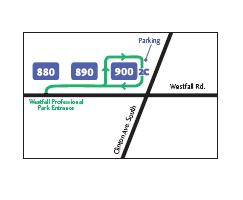

|
PRACTICE DESCRIPTION APPOINTMENTS 9 AM to 5 PM weekdays (except Tuesday) TELEPHONE HOURS (585) 271-0930 is answered from 8:30 AM until noon and 1:30 PM until 4:30 PM on weekdays except Tuesday. AFTER HOURS EMERGENCY LINE (585) 453-2468, except when Pathway Pediatrics is on call. CROSS COVERAGE During regular hours on Tuesdays, or weekdays when Dr. Foye is on vacation, you may contact one of the covering pediatricians. These pediatricians also rotate night, weekend and holiday coverage with Dr. Foye. SATURDAY MORNING The pediatrician who is on-call for the weekend will be in her/his office on Saturday morning. You may call after 8:30 AM. Call Dr. Foye's regular number to determine which pediatrician is on-call. LOCATION |
|  |